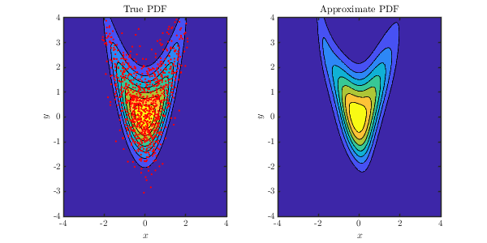
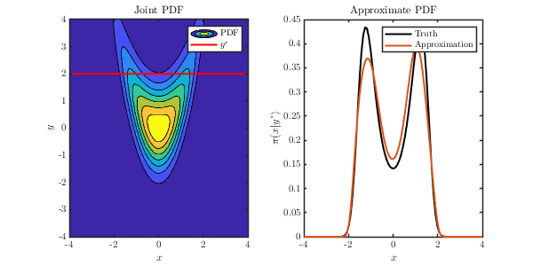
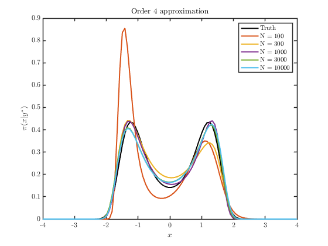

Contents
clear; clc; close all;
sd = 1; rng(sd);
addpath(genpath('../src'))
d = 2;
M = 1000;
-- STANDARDIZE SAMPLES --
samples = sample_banana(M);
x_samples = samples(:,1);
y_samples = samples(:,2);
G = GaussianPullbackDensity(d, true);
G = G.optimize([y_samples, x_samples]);
norm_samples = G.evaluate([y_samples, x_samples]);
ynorm_samples = norm_samples(:,1);
xnorm_samples = norm_samples(:,2);
-- LEARN TRANSPORT MAP --
ref = IndependentProductDitribution({Normal(), Normal()});
basis = HermiteProbabilistPoly();
TM = identity_map(1:d, basis);
PB = PullbackDensity(TM, ref);
[PB, ~] = PB.greedy_optimize([ynorm_samples, xnorm_samples], [], [10,30], 'max_terms');
CM = ComposedPullbackDensity({G, PB}, ref);
Term 0 - Training error: 1.418439, Validation error: NaN
Term 2 - Training error: 1.418438, Validation error: NaN
Term 3 - Training error: 1.273878, Validation error: NaN
Term 4 - Training error: 1.273215, Validation error: NaN
Term 5 - Training error: 1.265608, Validation error: NaN
Term 6 - Training error: 1.265072, Validation error: NaN
Term 7 - Training error: 1.265071, Validation error: NaN
Term 8 - Training error: 1.263520, Validation error: NaN
Term 9 - Training error: 1.261428, Validation error: NaN
Term 10 - Training error: 1.261427, Validation error: NaN
Term 0 - Training error: 1.418439, Validation error: NaN
Term 2 - Training error: 1.418429, Validation error: NaN
Term 3 - Training error: 1.415890, Validation error: NaN
Term 4 - Training error: 1.409103, Validation error: NaN
Term 5 - Training error: 1.404070, Validation error: NaN
Term 6 - Training error: 1.403844, Validation error: NaN
Term 7 - Training error: 1.196712, Validation error: NaN
Term 8 - Training error: 1.175529, Validation error: NaN
Term 9 - Training error: 1.175528, Validation error: NaN
Term 10 - Training error: 1.000332, Validation error: NaN
Term 11 - Training error: 0.996817, Validation error: NaN
Term 12 - Training error: 0.995597, Validation error: NaN
Term 13 - Training error: 0.986088, Validation error: NaN
Term 14 - Training error: 0.985842, Validation error: NaN
Term 15 - Training error: 0.985221, Validation error: NaN
Term 16 - Training error: 0.985173, Validation error: NaN
Term 17 - Training error: 0.984171, Validation error: NaN
Term 18 - Training error: 0.984069, Validation error: NaN
Term 19 - Training error: 0.983910, Validation error: NaN
Term 20 - Training error: 0.981600, Validation error: NaN
Term 21 - Training error: 0.981595, Validation error: NaN
Term 22 - Training error: 0.968504, Validation error: NaN
Term 23 - Training error: 0.968037, Validation error: NaN
Term 24 - Training error: 0.967870, Validation error: NaN
Term 25 - Training error: 0.967058, Validation error: NaN
Term 26 - Training error: 0.966220, Validation error: NaN
Term 27 - Training error: 0.965892, Validation error: NaN
Term 28 - Training error: 0.965886, Validation error: NaN
Term 29 - Training error: 0.965161, Validation error: NaN
Term 30 - Training error: 0.964836, Validation error: NaN
-- PLOT FULL DENSITY --
xx = linspace(-4,4,100);
[X, Y] = meshgrid(xx, xx);
true_pi = exp(log_pdf_banana([X(:), Y(:)]));
approx_pi = exp(CM.log_pdf([Y(:), X(:)]));
true_pi = reshape(true_pi, size(X,1), size(X,2));
approx_pi = reshape(approx_pi, size(X,1), size(X,2));
figure('position',[0,0,600,300])
subplot(1,2,1)
contourf(X, Y, true_pi)
hold on
plot(samples(:,1), samples(:,2), '.r','MarkerSize',6)
axis([-4,4,-4,4])
lim = caxis;
xlabel('$x$')
ylabel('$y$')
title('True PDF')
subplot(1,2,2)
contourf(X, Y, approx_pi)
axis([-4,4,-4,4])
caxis(lim)
hold on
xlabel('$x$')
ylabel('$y$')
title('Approximate PDF')

-- PLOT CONDITIONAL DENSITY --
yst = 2;
xx = linspace(-4,4,100);
true_cond_pi_tilde = exp(log_pdf_banana([xx.', repmat(yst,length(xx),1)]));
true_cond_pi_norm_const = trapz(xx, true_cond_pi_tilde);
true_cond_pi = true_cond_pi_tilde/true_cond_pi_norm_const;
approx_pi = exp(CM.log_pdf([repmat(yst,length(xx),1), xx.'],2));
figure('position',[0,0,600,300])
subplot(1,2,1)
contourf(X, Y, true_pi)
hold on
plot(xx, yst*ones(length(xx),1), '-r')
axis([-4,4,-4,4])
legend('PDF','$y^*$')
xlabel('$x$')
ylabel('$y$')
title('Joint PDF')
hold off
subplot(1,2,2)
hold on
plot(xx, true_cond_pi, '-k')
plot(xx, approx_pi)
xlim([-4,4])
legend('Truth','Approximation')
xlabel('$x$')
ylabel('$\pi(x|y^*)$')
title('Approximate PDF')
hold off

-- PLOT APPROXIMATION VS SAMPLE-SIZE --
M_vect = [100,300,1000,3000,10000];
order = 4;
approx_pi = cell(length(M_vect),1);
for i=1:length(M_vect)
samples = sample_banana(M_vect(i));
x_samples = samples(:,1);
y_samples = samples(:,2);
G = GaussianPullbackDensity(d, true);
G = G.optimize([y_samples, x_samples]);
norm_samples = G.evaluate([y_samples, x_samples]);
ynorm_samples = norm_samples(:,1);
xnorm_samples = norm_samples(:,2);
ref = IndependentProductDitribution({Normal(), Normal()});
TM = total_order_map(1:d, HermiteProbabilistPoly(), order);
PB = PullbackDensity(TM, ref);
PB = PB.optimize([ynorm_samples, xnorm_samples]);
CM = ComposedPullbackDensity({G, PB}, ref);
approx_pi{i} = exp(CM.log_pdf([repmat(yst,length(xx),1), xx.'],2));
end
figure
hold on
plot(xx, true_cond_pi, '-k','LineWidth',2,'DisplayName','Truth')
for i=1:length(M_vect)
plot(xx, approx_pi{i}, 'DisplayName', ['N = ' num2str(M_vect(i))])
end
legend('show')
xlabel('$x$')
ylabel('$\pi(x|y^*)$')
title(['Order ' num2str(order) ' approximation'])
hold off
snapnow
-- DEFINE MODEL --
function X = sample_banana(N)
x1 = randn(N,1);
x2 = x1.^2 + randn(N,1);
X = [x1, x2];
end
function log_pi = log_pdf_banana(X)
log_pi_x1 = log(normpdf(X(:,1)));
log_pi_x2 = log(normpdf(X(:,2) - X(:,1).^2));
log_pi = log_pi_x1 + log_pi_x2;
end
